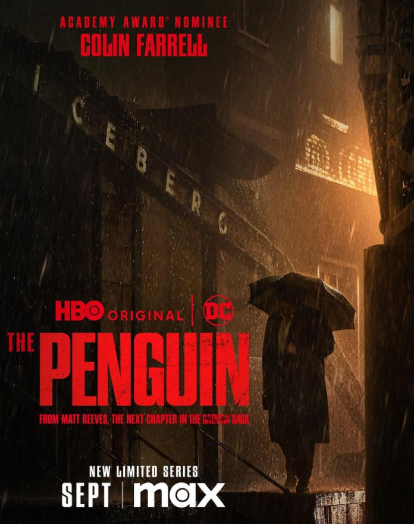
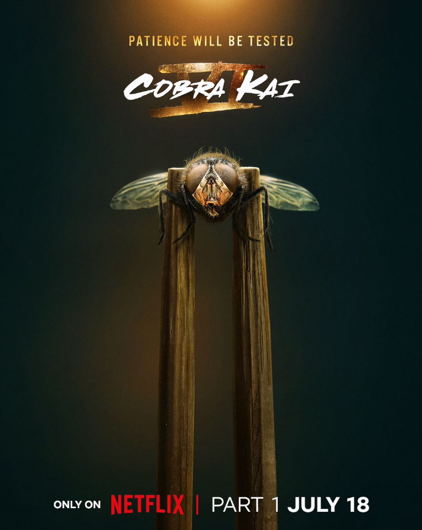
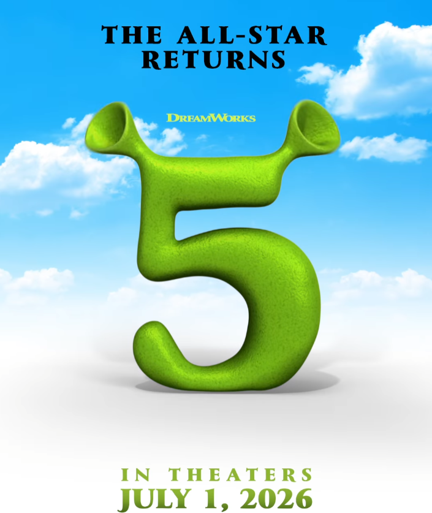

The Penguin - HBO Original
The streets will know his name.

Join the cast and executive producers of the @HBO Original Series #ThePenguin at @comic_con on July 26 & 27 for an exclusive panel, a stop by the Gotham Ice Truck, and an unforgettable night at the Iceberg Lounge.
Cobra Kai VI - Netflix
Patience will be tested. 🪰 🥋10 days until the ultimate challenge begins.

All good things have to end at some point and Netflix has decided that the time has come to say goodbye to 'Cobra Kai'. The platform took some time but finally renewed the 'Karate Kid' universe series for a sixth season, also announcing that it would be the last. Of course, this does not necessarily mean that it will be the end of the road for the Miyagiverse, as its creators pointed out that closing the series "may be a bittersweet day for fans, but the Miyagiverse has never been stronger."
SHREK 5 - In Theaters 2026
Not too Far, Far Away… @shrek 5 is coming to theaters on July 1, 2026 with Mike Myers, Eddie Murphy, and Cameron Diaz.

Disney has always been the queen of animation, but there is a film that has also marked an entire generation and that gave a touch of attention to the Mickey Mouse House. Shrek, a fantasy comedy that parodied fairy tales, became one of the great titles of animation in the early 2000s. Now, 23 years after that first time, its fifth installment has been confirmed.